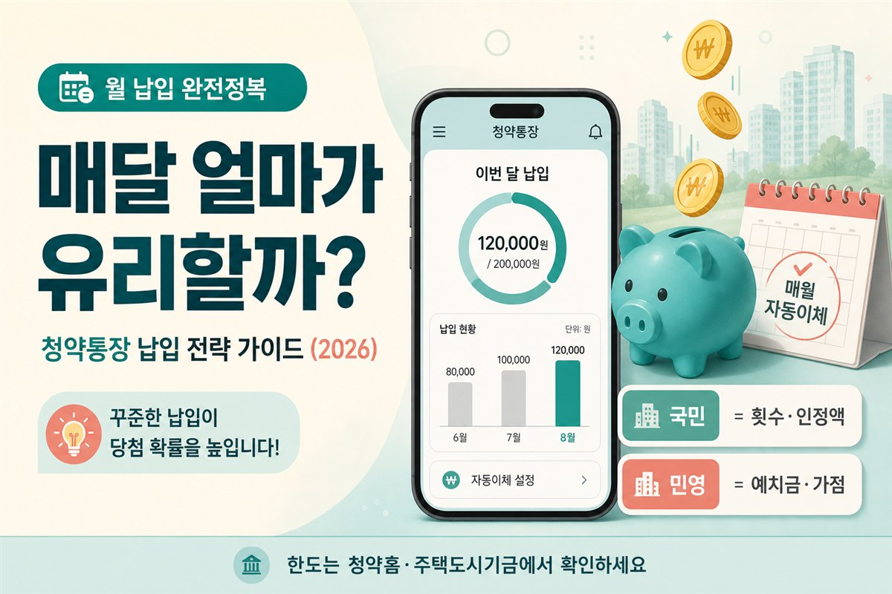

청약통장, 매달 얼마씩 넣어야 유리할까 — 납입금액 완전정복 (2026)
정답 금액보다, 국민주택·민영주택에 따라 달라지는 납입 관점부터 정리합니다

1. 도입 — 통장은 만들었는데, 얼마를 넣지?
청약통장은 가입했는데, 앱에서 “월 납입액”을 고르는 순간부터 막히는 분들이 많습니다. “최소만 넣어도 되나?”, “한도에 맞춰야 하나?”, “한 번에 몰아넣어도 되나?” — 주변 말과 커뮤니티 숫자만 보면 더 헷갈리기 쉽습니다.
지난 글에서 청약 필수 용어 10가지를 정리했다면, 이번엔 그다음 단계인 청약통장 납입금액을 깊게 다룹니다. 결론부터 말하면 “만능 정답 금액”은 없고, 국민주택을 노리느냐, 민영주택을 노리느냐에 따라 납입이 중요한 이유가 다릅니다.
월급쟁이 입장에서 납입은 단순 저축이 아닙니다. 국민주택 쪽에서는 매달 인정되는 납입 횟수와 금액이 순위에 걸리고, 민영주택 쪽에서는 예치금 기준 충족과 가점이 함께 작동합니다. 같은 통장인데, 목표 주택 유형에 따라 “얼마를 넣느냐”의 의미가 달라지는 구조입니다.
먼저 읽어주세요
월 납입 인정한도는 최근에도 상향·변경 이슈가 있어 구체 금액을 단정하지 않습니다. 일반적으로 알려진 숫자보다, 청약홈·주택도시기금의 최신 한도를 직접 확인하는 것이 안전합니다. 본 글은 개념·전략·실무 절차 정리이며 투자·법률 자문이 아닙니다.
- 청약통장(주택청약종합저축)의 기본 개념을 다시 짚습니다.
- 국민주택 vs 민영주택에서 납입이 왜 다르게 중요한지 표로 정리합니다.
- 가입·조회·자동이체·소득공제 등 실무 절차를 단계별로 안내합니다.
- 상황별 전략, 자주 하는 실수, FAQ까지 초보 눈높이로 풀어 씁니다.
2. 청약통장 기본 — 주택청약종합저축이 뭔가요?
흔히 말하는 청약통장은 대부분 주택청약종합저축입니다. 은행 창구나 인터넷뱅킹, 모바일 앱에서 가입하고, 매월(또는 필요할 때) 돈을 넣으며, 나중에 국민주택·민영주택 청약 자격을 갖추는 데 쓰는 통장이라고 보면 됩니다.
“통장만 있으면 된다”가 아니라, 가입 기간·납입 횟수·잔액(예치금)·가점 같은 요소가 어떤 단지·어떤 유형을 넣느냐에 따라 다르게 작동합니다. 용어가 아직 낯설다면 청약 필수 용어 정리를 먼저 훑어보는 편이 좋습니다.
청약통장은 한 번 만들고 끝이 아닙니다. 해지하면 가입기간·납입 이력이 리셋되는 경우가 많아, 금액이 부담되더라도 통장 자체는 유지하는 편이 안전합니다. 나중에 여유가 생기면 월 납입액을 올리면 되고, 그동안 쌓인 가입기간이 가점에 반영될 수 있습니다. 정확한 기준은 청약홈·주택도시기금 공식 안내를 확인하세요.
3. 핵심 — 국민주택 vs 민영주택, 납입이 왜 다르게 중요할까
같은 청약통장이라도, 목표 주택 유형에 따라 “매달 얼마를 넣느냐”의 의미가 달라집니다. 숫자를 외우기보다 인정 방식의 개념을 먼저 잡는 게 중요합니다. 아래 표는 두 유형에서 납입이 어떤 역할을 하는지 한눈에 비교한 것입니다.
| 구분 | 국민주택 | 민영주택 |
|---|---|---|
| 납입의 핵심 | 매월 인정되는 납입 횟수·금액 | 예치금 기준 충족 + 가점 경쟁 |
| 순위 판단 | 납입 횟수·인정 금액이 순위에 영향 | 가점제(무주택·부양가족·통장기간)가 핵심 |
| 잔액 역할 | 인정 납입 누적이 중요 | 지역·평형별 예치금 기준 충족 필요 |
| 확인처 | 청약홈·주택도시기금 납입 인정 안내 | 청약홈 예치금 기준표 + 단지 공고 |
※ 구체 금액·한도는 시기별로 변동될 수 있습니다. 청약홈·주택도시기금 최신 안내를 확인하세요.
한 줄로 기억하면 이렇습니다. 국민주택은 “꾸준히, 인정되는 방식으로 쌓는 것”이 핵심이고, 민영주택은 “예치금을 맞추고, 가점을 키우는 것”이 핵심입니다. 두 유형을 동시에 노린다면, 국민주택용 납입 습관과 민영주택용 예치금·가점 점검을 병행해야 합니다.
4. 국민주택 — 납입 인정액과 횟수가 왜 중요한가
국민주택(공공이 공급하는 유형으로 흔히 이해) 쪽에서는 매달 꾸준히 납입한 횟수와, 인정되는 납입 금액이 당락·순위에 영향을 주는 경우가 많습니다. “한 번에 큰돈을 넣는 것”보다 “매월 인정되는 방식으로 쌓는 것”이 핵심 개념입니다.
월 납입 인정한도는 제도 개편에 따라 변동될 수 있습니다. 예전에 듣던 금액을 그대로 믿지 말고, 청약홈·주택도시기금 기준의 최신 한도를 확인하는 습관이 필요합니다. 인터넷뱅킹 앱에서 “납입 인정액” 또는 “월 납입 한도” 항목을 찾아보면 내 통장에 적용되는 기준을 바로 확인할 수 있는 경우가 많습니다.
| 납입 방식 | 특징 | 주의할 점 |
|---|---|---|
| 매월 정기 납입 | 인정 한도 내에서 꾸준히 넣기 | 가장 기본적이고 안전한 방식 |
| 한 달에 몰아넣기 | 인정 한도 초과분은 인정 안 될 수 있음 | 다음 달을 비우면 횟수 손해 가능 |
| 자동이체 설정 | 매달 빠짐없이 납입하는 습관 형성 | 급여일 다음 날 등으로 설정 권장 |
| 납입액 변경 | 소득 변동 시 금액 조정 가능 | 변경 후에도 인정 한도 내인지 확인 |
국민주택을 주로 노린다면, 핵심은 “많이 넣는 것”보다 “매달 인정되는 납입으로 횟수와 금액을 쌓는 것”입니다. 한 달에 몰아넣고 몇 달을 비우는 방식이 불리해질 수 있는 유형이라면, 자동이체로 습관을 만드는 편이 현실적입니다. 급여일 다음 날로 자동이체를 걸어 두면, “이번 달도 넣었나?” 하는 걱정이 줄어듭니다.
5. 민영주택 — 예치금과 가점을 함께 보는 법
민영주택에서는 지역·면적(평형)별 예치금 기준을 맞추는 관점이 큽니다. 기준은 지역·평형별로 다르고, 공고·제도에 따라 달라질 수 있으니 청약홈 안내와 단지 공고를 보는 게 정답입니다. 예치금만 맞추고 끝내기보다, 무주택 기간·부양가족·통장 가입기간으로 구성된 청약 가점을 함께 점검하세요.
민영에서는 “잔액은 충분한데 가점이 낮다”는 조합이 자주 나옵니다. 예치금은 통장 잔액으로 충족했지만, 가점이 경쟁 단지 기준에 못 미치면 청약을 넣어도 당첨 가능성이 낮아집니다. 반대로 가점은 높은데 예치금이 부족하면, 원하는 평형에 신청조차 못 할 수 있습니다. 두 축을 동시에 점검하는 습관이 필요합니다.
| 단계 | 어디서 | 무엇을 확인 |
|---|---|---|
| 1단계 | 청약홈(applyhome.co.kr) | 관심 지역·평형별 예치금 기준표 |
| 2단계 | 해당 단지 공고문 | 공급 유형·주택형·예치금 요건 |
| 3단계 | 은행 앱·인터넷뱅킹 | 내 청약통장 현재 잔액 |
| 4단계 | 청약 가점 계산기 | 무주택·부양가족·통장기간 점수 |
예치금 기준은 “전국 동일”이 아닙니다. 수도권과 지방, 59㎡와 84㎡ 등 평형·지역 조합마다 기준이 달라집니다. 관심 단지가 정해졌다면, 그 단지 공고문의 주택형별 예치금 요건을 먼저 확인하고 내 통장 잔액과 대조하세요. 부족하면 납입 계획을 세우되, 무리해서 한꺼번에 넣기보다 청약 접수일까지 여유 있게 맞추는 편이 안전합니다.
6. 실무 절차 — 가입·조회·자동이체·소득공제
청약통장 납입은 “돈만 넣으면 끝”이 아닙니다. 가입부터 조회, 자동이체 설정, 소득공제까지 실무 흐름을 알아 두면 매달 헷갈리지 않고 관리할 수 있습니다.
-
가입
시중은행 창구, 인터넷뱅킹, 모바일 앱에서 “주택청약종합저축” 또는 “청약통장”으로 검색해 가입합니다. 이미 다른 은행에 통장이 있다면 해지 후 새로 만들기보다, 기존 통장을 유지하는 편이 가입기간에 유리합니다. -
납입 인정액 조회
은행 앱에서 청약통장 상세 화면 → “납입 인정액” 또는 “월 납입 한도” 항목을 확인합니다. 인정 한도는 청약홈·주택도시기금 안내와 대조해 최신 기준인지 점검하세요. -
자동이체 설정
급여일 다음 날 등 고정일에 자동이체를 걸어 두면, 매달 빠짐없이 납입하는 습관이 만들어집니다. 납입액은 인정 한도 내에서 본인 소득에 맞게 설정하되, 나중에 올릴 수 있으니 처음엔 부담 없는 금액부터 시작해도 됩니다. -
소득공제
주택청약종합저축 납입액은 소득공제 대상에 해당할 수 있습니다. 연말정산 시 공제 항목으로 반영되는지, 본인 상황에서 적용되는지 국세청·은행 안내를 확인하세요. 공제 요건·한도는 시기별로 달라질 수 있습니다.
납입 후에는 은행 앱에서 “이번 달 납입 완료” 여부를 한 번씩 확인하는 습관을 권합니다. 자동이체가 실패했는데 몰랐다가, 몇 달 뒤에야 발견하는 경우가 있습니다. 계좌 잔액 부족·한도 초과 등으로 이체가 안 될 수 있으니, 급여 입금 직후 자동이체가 실행되도록 날짜를 맞춰 두세요.
소득공제는 “청약 준비의 보너스”로 이해하면 됩니다. 납입 자체가 청약 자격·가점과 직결되고, 연말정산에서 일부 돌려받을 수 있다면 부담이 조금 줄어드는 효과가 있습니다. 다만 공제를 목적으로 무리하게 납입액을 올리기보다, 본인 소득·생활비 범위 안에서 꾸준히 넣는 것이 우선입니다. 공제 한도·요건은 국세청·은행 안내를 매년 확인하세요.
7. 상황별 전략 — 예시로 풀어보기
“얼마가 정답인가”보다 “내가 어떤 청약을 주로 노리는가”를 먼저 정하면 납입 전략이 훨씬 단순해집니다. 아래는 상황별로 접근 방식을 나눈 예시입니다.
| 상황 | 우선순위 | 실천 포인트 |
|---|---|---|
| 국민주택 위주 | 납입 횟수·인정 금액 | 매월 인정 한도 내 자동이체, 해지 금지 |
| 민영주택 위주 | 예치금 + 가점 | 관심 지역 예치금 표 확인, 가점 계산기 점검 |
| 둘 다 노림 | 납입 습관 + 예치금·가점 | 꾸준한 납입 유지, 예치금·가점 병행 점검 |
| 사회초년생·소액만 가능 | 통장 유지·가입기간 | 소액이라도 매월 넣기, 해지하지 않기 |
국민주택을 주로 노리는 경우 — 매달 빠짐없이, 인정되는 범위 안에서 꾸준히 넣는 전략이 일반적으로 이야기됩니다. 핵심은 “많이 넣는 것”보다 “매달 인정되는 납입으로 횟수와 금액을 쌓는 것”입니다.
민영주택을 주로 노리는 경우 — 관심 지역·희망 면적에 맞는 예치금 기준을 먼저 확인하고, 청약 가점을 함께 점검하세요. 예치금만 맞추고 가점을 무시하면, 경쟁 단지에서 불리해질 수 있습니다.
사회초년생·소액만 가능한 경우 — 당장 한도까지 못 넣어도, 통장을 유지하고 가입기간·납입 횟수를 쌓는 것부터가 우선입니다. “지금은 돈이 없으니 해지했다가 나중에 다시 만들자”는 선택은 가입기간이 리셋되는 등 손해가 클 수 있습니다. 금액은 상황에 맞게 조절하되, 통장 자체는 지키는 쪽을 권합니다.
8. 자주 하는 실수
피하면 좋은 패턴
- 한 번에 몰아넣기만 하고 매달을 비우기 — 국민주택처럼 횟수가 중요한 유형에서는 불리해질 수 있습니다. (세부 인정 규칙은 최신 기준 확인)
- 통장 해지 — 급전이 필요할 때 해지하면 가입기간·납입 이력이 날아갈 수 있습니다. 해지 전 반드시 신중히 검토하세요.
- 너무 오래 방치 — 가입만 하고 잔액·예치금·가점을 점검하지 않으면, 정작 공고가 떴을 때 자격이 모자랄 수 있습니다.
- 예전에 듣던 한도·예치금 숫자를 그대로 믿기 — 인정한도는 변동 이슈가 있으니 청약홈·주택도시기금에서 다시 확인하세요.
- 민영인데 납입액만 올리고 가점은 무시 — 예치금과 가점을 함께 봐야 합니다.
또 하나 흔한 실수는 “커뮤니티에서 들은 금액”을 그대로 따르는 것입니다. “○○만 원 넣으면 된다”는 말은 그 사람의 목표·지역·시점과 다를 수 있습니다. 내 상황에 맞는 기준은 청약홈·주택도시기금·해당 단지 공고에서 확인하는 것이 안전합니다.
9. 자주 묻는 질문
Q. 월 납입 인정한도는 어디서 확인하나요?
청약홈(applyhome.co.kr)·주택도시기금 공식 안내와, 가입 은행 앱의 청약통장 상세 화면에서 확인할 수 있습니다.
인정 한도는 제도 개편에 따라 변동될 수 있으니, 청약 전에 최신 기준을 대조하세요.
Q. 한 달에 몰아넣고 다음 달을 비워도 되나요?
국민주택처럼 납입 횟수가 순위에 영향을 주는 유형에서는 불리해질 수 있습니다.
인정 한도를 초과한 금액은 인정되지 않을 수 있고, 빈 달이 생기면 횟수 손해가 날 수 있습니다.
세부 인정 규칙은 청약홈·주택도시기금 최신 안내를 확인하세요.
Q. 민영만 노리는데 국민주택식 납입도 해야 하나요?
민영주택은 예치금·가점이 핵심이므로, 예치금 기준 충족과 가점 점검이 우선입니다.
다만 통장 가입기간은 가점에 반영되므로, 꾸준한 납입으로 가입기간을 쌓는 것은 여전히 유리합니다.
Q. 소득공제는 어떻게 받나요?
주택청약종합저축 납입액은 소득공제 대상에 해당할 수 있습니다.
연말정산 시 반영 여부·한도는 국세청·은행 안내를 확인하세요.
공제 요건은 시기별로 달라질 수 있습니다.
Q. 통장을 옮기면 가입기간이 이어지나요?
은행 간 통장 이전·변경 시 가입기간·납입 이력 처리 방식이 다를 수 있습니다.
이전 전에 주택도시기금·가입 은행에 문의해, 가입기간이 리셋되지 않는지 확인하세요.
10. 마무리 — 오늘 할 일
청약통장 납입은 “최대 금액을 맞추는 게임”이 아니라, 내가 노리는 주택 유형에 맞는 방식으로 꾸준히 쌓는 게임에 가깝습니다. 국민주택이면 꾸준한 인정 납입, 민영이면 예치금·가점 — 이 두 축만 구분해도 매달 넣는 금액에 대한 불안이 많이 줄어듭니다.
용어가 헷갈리면 청약 필수 용어 10가지를 다시 보고, 내 가점은 청약 가점 계산기로 점검해 보세요. 관심 단지 일정은 분양 알리미로 놓치지 않게 챙기면 됩니다.
같이 보면 좋은 글·도구
📎 출처·참고
- 청약홈·주택도시기금 청약저축 납입·예치금 관련 안내 (최신 한도·기준은 공식 자료 확인)
- 청약 필수 용어 정리
- 청약 가점 계산기 · 분양 알리미

본 글은 정보 제공 목적이며 투자·법률 자문이 아닙니다. 청약통장 납입 인정한도·예치금·가점·자격 등 정확한 기준은 청약홈·주택도시기금 공식 안내와 해당 단지 공고에서 확인하시기 바랍니다.